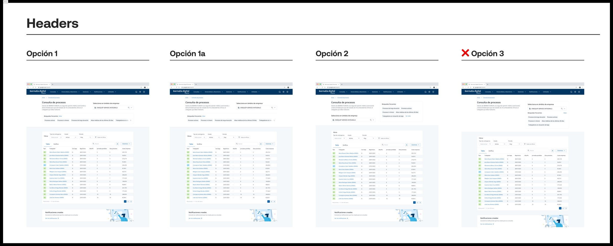
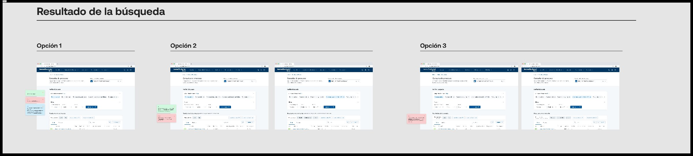
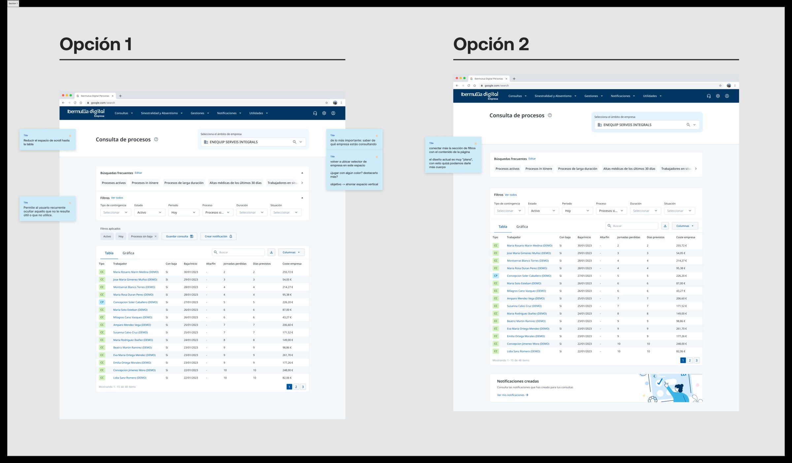

01 · Early Explorations
Before the Five Options: Granular Exploration
The problem at this stage was easy to state and hard to solve: the data was dense, multi-company, and used by three audiences with different priorities, so before narrowing to a shortlist, an earlier round explored filter representation at a more granular level — filter types (multiselect, slider), chip vs. badge treatments, "filter box" configurations, and componentized badges. Each direction was tested against real data density, not sample content, because a pattern that looked clean with five rows often broke down completely with fifty. What survived that stress test is what carried forward into the five consolidated options tested next.
A rejected iteration, in the open
✕ Período del proceso — Rejected
Within the "Iteración Filtros" set on the board above, one specific approach to the process-period filter was tried, marked rejected, and replaced with an approved alternative sitting right next to it — a small, concrete example of the trial-and-error the case study describes in the abstract. It was cut because it asked users to recall a date range from memory before they could filter, instead of letting the interface surface likely ranges for them — a pattern that repeats throughout this notebook: options lost when they pushed cognitive work onto the user instead of the system.
02 · Iterations
Five Filter Layouts, One Approved
✓ Opción 4 — Approved
Five distinct filter layouts were designed and reviewed side by side, each answering the same question differently: how much should be visible by default? Three were rejected because they either overwhelmed HR users with every field at once, or hid fields advisors needed constantly. A fourth was approved and became the foundation for the hierarchical common/advanced structure described in the live case study.
Trade-off
Every one of these five options had to serve two audiences pulling in opposite directions: third-party advisors who needed every filter visible because they worked across unfamiliar client accounts, and HR teams who ran the same three searches every week and wanted the rest out of the way. Option 4 won not because it was the most elegant layout, but because it was the only one where neither group had to fight the interface to get what they needed.
Headers: what got cut
✕ Opción 3 — Rejected
The header treatment for the process-query screen went through four options. Three moved forward into table-filter testing; the third was marked rejected before it reached that stage — it buried the company-context label below the primary actions, reintroducing exactly the disorientation the redesign was meant to fix.

Company selector: from six options to one
Before sketching anything new, the company selector already live in the product was pulled apart — screen by screen, state by state — to understand exactly how it behaved with a single company selected versus several, and where that logic started to strain for advisors juggling multiple clients. That teardown, not a blank canvas, was the starting point for what came next.
Method
Reverse-engineering before redesigning
Rather than proposing a new selector cold, the existing component was fragmented into its individual states and interactions to see how single- and multi-company selection actually worked under the hood. That groundwork made it possible to test six new variants against a real baseline — what the component already did right, and specifically where it broke down — instead of guessing at requirements from scratch.
✓ Opción 4 — Recommendation approved
Persistent company context — the anchor keeping third-party advisors oriented across clients — went through six selector variants, each handling single- and multi-company selection differently. Two were marked "not recommended," a third rejected, and the fourth recommendation was approved and built out into its full component states: default, custom groupings, company groups, and icon set. The volume of variants here wasn't overkill — it reflects how much weight this single component had to carry for the platform's most disoriented users.
Stakeholder feedback
Advisors flagged this before it was a design problem
Early interviews surfaced a recurring complaint: advisors managing several client companies would sometimes act on one client's data while believing they were looking at another's — a costly mistake, not just a UX annoyance. That single piece of feedback is the reason six variants were tested for one selector component, rather than one.
Search results: three options weighed with live feedback
The search-results layout tested three options directly, each carrying its own colored feedback notes from review — the kind of working annotation that doesn't survive into a polished case study but is exactly how the decision got made. The chosen option folded those notes on grouping and empty-state copy directly into the version that shipped, rather than treating the feedback as a separate round of revisions.

03 · Final Direction
What Shipped
Two complete layout directions for the Process Query screen were built out and compared end to end — one organizing filters in a left-hand panel, the other integrating them inline above the data table. The inline version shipped: with data this dense, a persistent side panel ate into the one resource users cared about most — table width — for a benefit that testing showed most users didn't need once common filters surfaced by default.

Saved searches and notifications: shipped state, and the alternative explored alongside it
Saved searches — the single most requested feature across all three user groups — wasn't designed as one screen. Each state was built and reviewed independently: saving a search, editing a saved search, creating a notification from an active filter set, and viewing a notification that already exists. Splitting it this way surfaced edge cases a single mockup would have hidden — like what a user sees when they try to edit a saved search a colleague has since renamed. A second notification pattern was explored in parallel before the team converged on the version that shipped — browse both below.
Design decision
Testing every state, not the happy path
It would have been faster to mock up a single, fully-populated saved-searches panel and call it done. Testing each state on its own — empty, editing, notification-pending, notification-received — is what caught the gaps a single polished screen tends to paper over. Keeping the alternative notification pattern here, rather than deleting it, is a reminder that the shipped version was chosen, not merely the first idea that came to mind.
04 · Learnings
Why This Matters
Reflection
The 16 iterations weren't indecision — they were an argumentation framework in action
As described in the main case study, every proposed change had to tie back to a specific research insight or usability finding. The approve/reject labels throughout this notebook are the visible trace of that discipline: options weren't dropped because of taste, they were dropped when they failed to serve either the third-party advisors who needed to see everything, or the HR teams who needed the fastest possible path to a repeat search.
The practical lesson: documenting rejection with the same rigor as approval is what makes a design decision defensible later — to stakeholders, to new team members joining mid-project, and to future me revisiting the file.
What I'd improve today
If I were starting this project now, I'd formalize the argumentation framework earlier — as a lightweight template attached to every proposed change from day one, rather than a discipline that emerged partway through. It would have made the approve/reject trail in this notebook easier to produce, and easier for a new team member to follow without me walking them through it.